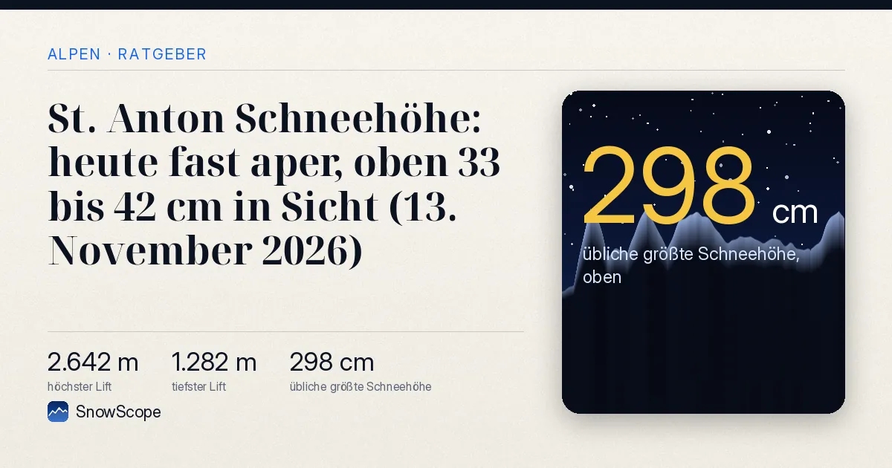

St. Anton Schneehöhe: heute fast aper, oben 33 bis 42 cm in Sicht (13. November 2026)
St Antons steiles Gelände erfordert Schneehöhe, um sicher zu fahren. Die SnowScope-Karte zeigt heute blanke Erde im Tal, etwa 5 cm auf Mittelhang (1962 m) und rund 1 cm nahe dem Gipfel (2642 m). Innerhalb einer Woche werden die hohen Hänge 33 bis 42 cm gewinnen – eine echte Veränderung, doch das Tal sieht vor allem Regen.
Die Live-Schneeprognose für St. Anton am Arlberg in der SnowScope-AppSchneehöhen, Pulverschnee-Alarme und 3D-Karte, gratis.

Warum so wenig Schnee oben übrig bleibt
Die vergangene Woche brachte 17 cm Neuschnee zur Spitze, davon 7 cm nur in den letzten 24 Stunden. Doch am Boden liegen nur etwa 1 cm. Die exponierten Grate der Arlberg-Region werden ständig vom Wind und von starker Herbstsonne heimgesucht – beide Faktoren tragen Neuschnee schnell ab. Mittelhang schneidet mit 5 cm besser ab, weil die Mulden und Rinnen dort Windschutz bieten.
Die Talstation von St Anton bleibt trocken. November ist auf 1282 m typischerweise der trockenste Monat der Saison, und dieses Jahr folgt diesem Muster exakt.
Was die nächsten sieben Tage bringen werden
SnowScope prognostiziert nächste Woche 42 cm an der Spitze, 33 cm auf Mittelhang und 18 cm in der Höhe. Die ersten 24 Stunden sollten oben etwa 5 cm bringen. Allerdings liegen andere Vorhersagen, die wir vergleichen, deutlich breiter – 38 bis 93 cm am Gipfel und 34 bis 86 cm auf Mittelhang. Solche Spannbreiten signalisieren echte Unsicherheit über die Stormgröße, daher ist tieferer Schnee durchaus möglich.
Die Schneegrenze liegt bei etwa 1480 m, knapp über dem Dorf. Das bedeutet, die unteren Hänge und Straßen von St Anton sammeln Regen, während das Skigelände darüber weiß wird. Eine Mitnahme von Schneeketten für die Passstraße ist diese Woche sinnvoll.

Wann Mittelhang Fahrttiefe erreicht
Steile Hänge und Tiefschneegelände brauchen viel mehr Schnee als präparierte Pisten. Ein praktischer Richtwert sind 50 cm auf Mittelhang. Schaut man auf 46 vergangene Winter (1980–81 bis 2025–26), lag St Anton diese Tiefe auf Mittelhang 17 Wochen lang in 9 von 10 Wintern an, und an der Spitze 24 Wochen.
November bietet typischerweise nur 22 cm auf Mittelhang – zu wenig für anspruchsvolles Gelände. Dezember klettert auf 62 cm, Januar auf 101 cm. Das bedeutet, Mittelhang überschreitet normalerweise die 50-cm-Marke irgendwann im Dezember, nicht früher.
Wie diese Saison mit dem Langzeitdurchschnitt vergleicht
Ein typischer Winter spitzt sich auf 194 cm auf Mittelhang und 298 cm an der Spitze zu. Diese Zahlen haben sich im Laufe der Zeit nach unten verschoben. Mittelhang spitzte sich im ersten Jahrfünft unserer Datenreihe auf einen Median von 218 cm zu, doch in den letzten 15 Jahren nur auf 178 cm. Die Talstation zeigte einen steileren Rückgang, von 91 cm auf 73 cm. Der letzte Winter endete mit 159 cm und 238 cm, unter dem Langzeitmedian.
Die zuverlässigste Woche für Tiefe über den ganzen Berg ist Woche 13 Ende März. Dann hält Mittelhang typischerweise 162 cm und die Spitze 238 cm. Das Skigelände – St. Christoph, Stuben und St Anton zusammen – umfasst 99 km Pisten mit 40 Liften.
Was das für deine Pläne jetzt bedeutet
Frühsaisonschnee in dieser Höhe ist dünn und leicht beschädigt. Felsen und Gras verstecken sich unter flachem Schnee. Vermeide steiles Gelände und Tiefschneefahrten, bis Mittelhang näher an 50 cm aufgelaufen ist, was typischerweise Mitte Dezember ankommt.
Auch sanfte Pisten profitieren von besserer Schneedecke später in der Saison. Falls du in der kommenden Woche fahren möchtest, pack mehrere Schichten ein und rechne mit wechselnden Bedingungen: Winter ab Mittelhang aufwärts, Herbst im Tal.
Tipps für Skifahrer
- Steiles und Tiefschneefahren sollten warten, bis die Schneehöhe auf Mittelhang etwa 50 cm erreicht, normalerweise Mitte Dezember in St Anton.
- Bevor du die Piste während des kommenden Sturms verlässt, check das tägliche Tirol-Lawinenhandbuch auf avalanche.report.
- Nimm Schneeketten für die Arlberg-Passstraße diese Woche mit: Regen fällt im Tal, während oben Schnee fällt.
- Frühsaisonschnee auf flacher Unterlage verdeckt oft Felsen und Gras. Fahre präparierte Pisten und vermeide Gelände, wo der Untergrund durchschimmert.
- Plane steilere Abfahrten und Tiefschneefahrten ab Januar, wenn die Tiefe über den ganzen Berg zuverlässig tiefer ist.
Zu diesen Zahlen
Die Schneehöhen der Skigebiete sind der meiste Schnee in den oberen Hängen am angegebenen Tag; es sind Schätzungen für eine Fläche, keine Messung an einem Punkt. Prognosen können sich ändern. Lies vor dem Freeriden immer den offiziellen Lawinenlagebericht.
Offizielle Lawinenlageberichte: Avalanche.report – Euregio Tyrol
Diesen Bericht zitieren
Für Forschung, Lehre oder Presse: Zahlen und Grafiken sind unter CC BY 4.0 mit dieser Quellenangabe frei nutzbar.
SnowScope (2026), St. Anton Schneehöhe: heute fast aper, oben 33 bis 42 cm in Sicht (13. November 2026), https://snowscope.app/blog/de/2026/11/st-anton-snow-depth-13-november-2026.html, abgerufen am 2026-11-13
SnowScope (Atlas Labs). (2026, November 13). St. Anton Schneehöhe: heute fast aper, oben 33 bis 42 cm in Sicht (13. November 2026). SnowScope snow reports. https://snowscope.app/blog/de/2026/11/st-anton-snow-depth-13-november-2026.html
BibTeX
@misc{snowscope2026stantonsnowdepth13novemb,
author = {{SnowScope (Atlas Labs)}},
title = {St. Anton Schneehöhe: heute fast aper, oben 33 bis 42 cm in Sicht (13. November 2026)},
year = {2026},
month = nov,
howpublished = {\url{https://snowscope.app/blog/de/2026/11/st-anton-snow-depth-13-november-2026.html}},
note = {Published 2026-11-13 13:20 UTC; accessed 2026-11-13}
}· CC BY 4.0 · Methoden, Daten und Werkzeuge →
St. Anton am Arlberg: Schnee und Temperatur nach Höhe, dieser Winter vs letzter (Werkzeuge) →
St. Anton am Arlberg folgen
Gratis: eine Nachricht, wenn Neuschnee kommt, und jeden Morgen die Vorhersage.